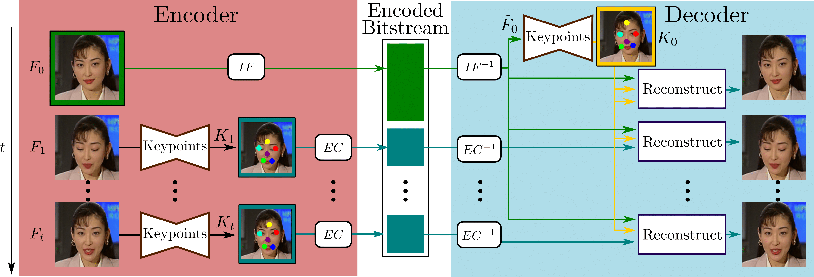
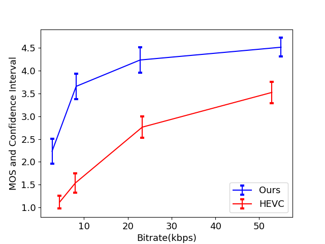

Overview
In this work, we describe, for the first time, a video coding pipeline that employs the popular
First Order Model
for video animation, to achieve long-term video frame prediction.
Our scheme is open loop: we encode the first frame of the video using conventional Intra coding,
and transmit keypoints extracted by subsequent frames in the bitstream.
At the decoder side, the received keypoints are used to warp the Intra reference frame to reconstruct the video.
We also propose and analyze an adaptive Intra frame selection scheme that,
in conjunction with varying the quantization of Intra frames,
enable to attain different rate-distortion operating points.
Our experiments, validated with several video quality metrics and a subjective test campaign,
show average bitrate savings compared to HEVC of over 80%,
demonstrating the potential of this approach for ultra-low bitrate video conferencing.

Results
Voxceleb is a large audio-visual dataset of human speech of 22,496 videos, extracted from YouTube videos.
We follow the pre-processing of \cite{siarohin2019first}
and filter out sequences that have resolution lower than 256x256 and resize the remaining videos
to 256x256 preserving the aspect ratio. This dataset is split into 12,331 training and 444 test videos.
For evaluation, in order to obtain high quality videos, we select the 90 test videos with the highest resolution before resizing.
Original Video
HEVC (>50 Kbps)
HEVC (~10 Kbps)
Ours (~10 Kbps)
Ours (~1.5 Kbps)
Xiph.org is a collection of videos we downloaded from Xiph.org.
This repository includes video sequences widely used in video processing (``News'', ``Akiyo'', ``Salesman'', etc.).
We select 16 sequences of talking heads that correspond to the targeted video conferencing scenario.
The full list of videos used in the experiments is available on the GitHub page
of the paper. The region of interest is cropped with a resolution of 256x256 with speakers' faces comprising 75% of the frame.
Original Video
HEVC (>50 Kbps)
HEVC (~10 Kbps)
Ours (~10 Kbps)
Ours (~1.5 Kbps)
Quantitative Results
We compare our approach with the standard HM 16 (HEVC) low delay configuration by
by performing subjective test on 10 videos (8 from Voxceleb and 2 from Xiph.org) using Amazon Mechanical Turk (AMT).
Each sequence is encoded using 8 different bite-rate configurations (4 with HEVC, 4 with proposed method) ranging from 5Kbps to 55Kbps.
We implement a simple Double Stimulus Impairment Scale (DSIS) test interface in AMT.

|
VoxCeleb |
Xiph.org |
| BD quality |
BD rate |
BD quality |
BD rate |
| PSNR |
2.88 |
65.50 |
3.14 |
72.44 |
| MS-SSIM |
0.070 |
83.96 |
0.075 |
86.41 |
| VIF |
0.027 |
72.29 |
0.021 |
68.02 |
| VMAF |
37.43 |
82.29 |
31.04 |
83.44 |
|
PCC |
SROCC |
| BD quality |
BD rate |
BD quality |
BD rate |
| PSNR |
0.92 |
0.95 |
0.77 |
0.92 |
| MS-SSIM |
0.94 |
0.95 |
0.84 |
0.95 |
| VIF |
0.38 |
0.75 |
0.28 |
0.75 |
| VMAF |
0.94 |
0.96 |
0.80 |
0.89 |
The Mean Opinion Score computed over a 95% confidence interval shows that our approach clearly outperforms HEVC
(average BD-MOS = 1.68, BD-rate = -82.35\%).
We further determined the Pearson Correlation Coefficient (PCC) and
the Spearman Rank-Order Correlation Coefficient (SROCC) between MOS and
five commonly used quality metrics, for our codec and HEVC.
We observe that, except VIF, these metrics correlate well with human judgment, at least on the tested data.
Based on these preliminary results, we proceed with an extensive performance evaluation of the proposed method using these quality metrics.